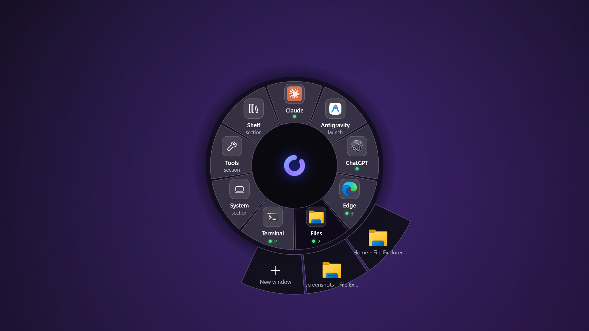
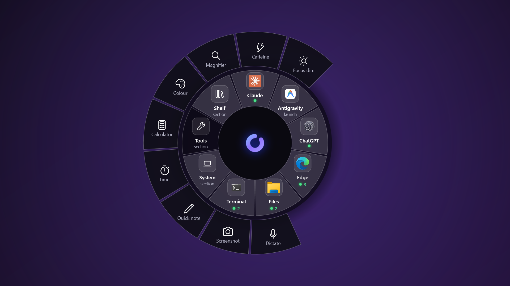
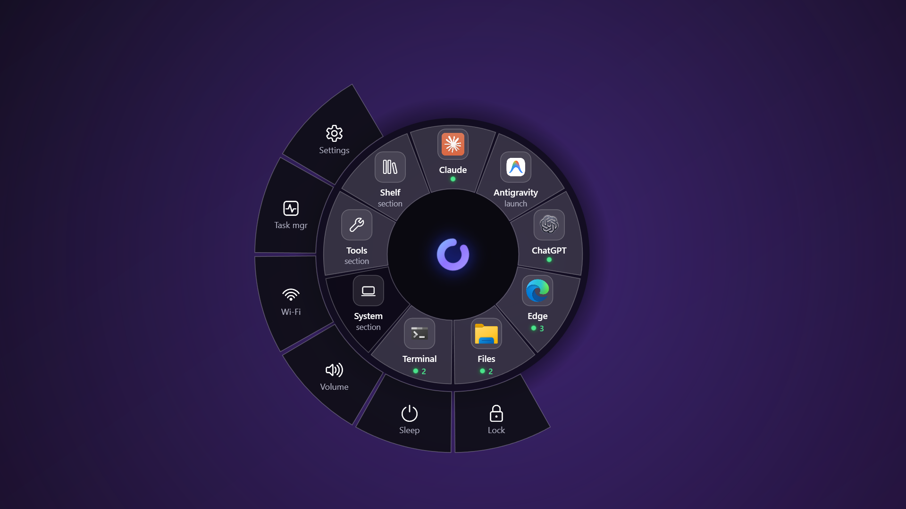
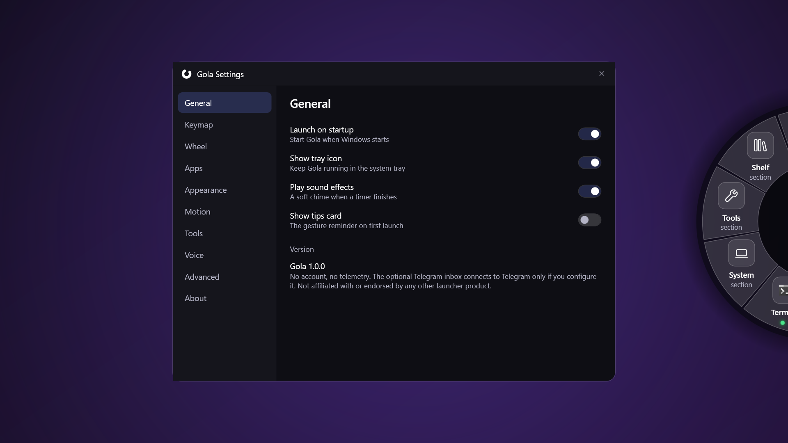

Taskbar semantics, on a wheel
App slices do what a taskbar button does, in one flick. Not running, release launches it.
One window, release focuses it immediately. Several, and they fan onto the outer ring as
live previews you slide onto. Minimised windows can't be captured, so they show the app
icon instead of a stale frame.

Ten popover tools
Timer with a sweeping ring, calculator with a click-to-copy result, colour picker that
copies any pixel as hex, magnifier, clipboard history of the last twenty entries,
screenshot, quick note, caffeine, focus dim and dictation.

System controls
Settings, Task Manager, Wi-Fi, Volume, Sleep and Lock, reached the same way as everything else.

Shelf — a seven-day inbox
Files that landed today on the left, a live preview on the right: images, text, markdown
and code render inline, anything else shows its size. Enter opens, Delete archives,
Ctrl+F searches. It keeps the last seven days, so nothing vanishes at midnight.
Phone → PC, through your own bot
Send a file, photo, link or note to a Telegram bot you created with
@BotFather, and it lands in the Inbox within seconds and appears in the Shelf.
The first sender to write is paired as owner; everyone else is ignored. Your token is
encrypted with DPAPI and removed from the config file.
Side dock
A strip on the right edge holding what you parked — screenshots, saved notes, cards.
Left-click to reopen, right-click to bin. It hides itself when empty.
Dictation, on your machine
Hold the chord over a text field, speak, and Gola types it where you were working.
A 141 MB Whisper model downloads once, then it runs entirely offline. Off until you
turn it on, because it opens the microphone.
Global shortcuts
Bind any tool to a combination that works without the wheel. Click the box, press the
keys, done. A modifier is required, so a bare letter can never fire while you type.
"hotkeys": {
"screenshot": "Ctrl+Shift+S",
"shelf": "Ctrl+Alt+B"
}
App switcher
An Apps › slice fans out your eight most recent windows in z-order. Flick to one,
release, and you are in it — alt-tab without the row of thumbnails.
Five item types
The wheel takes more than apps. Each entry in config.json is one of five kinds, and shell commands run only after you approve each one by hand.
- app
- tool
- shell
- snippet
- submenu
Settings that stay out of the way
Nine panes — General, Keymap, Wheel, Apps, Appearance, Motion, Tools, Voice, Advanced —
each writing straight to config.json and applying immediately. Five wheel sizes,
label length, fan depth, motion, and a live wheel redrawing beside every change.
